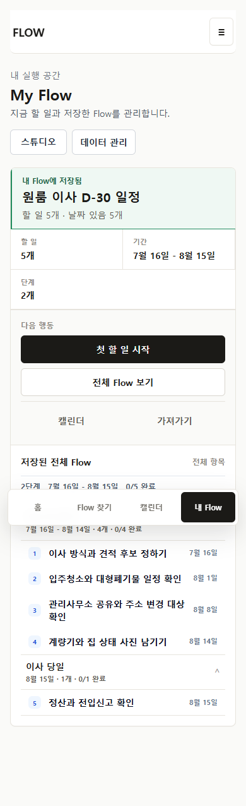
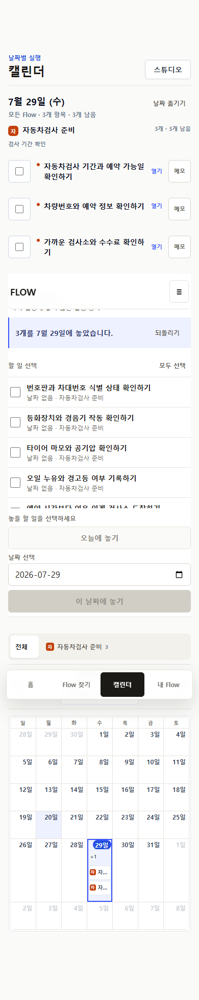
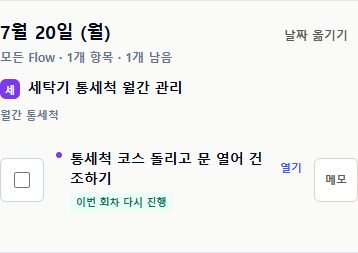
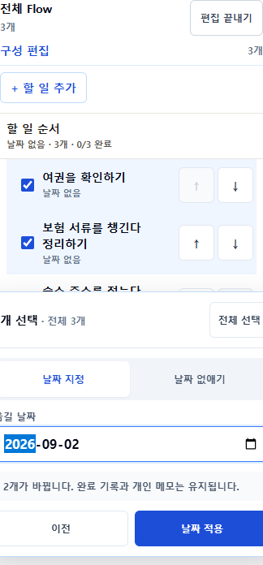
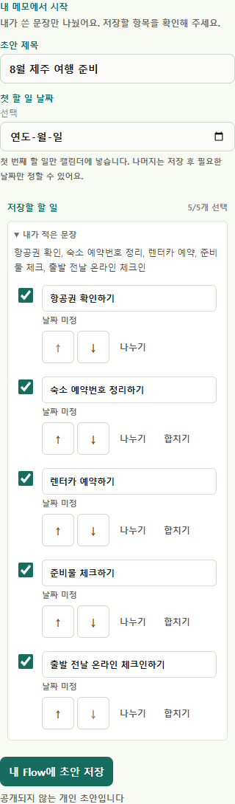
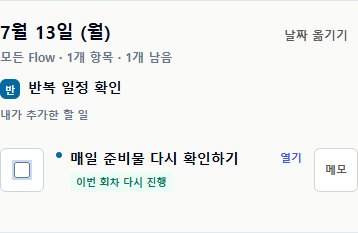

기준일 역산
저장 receipt, 전체 Flow, 완료와 다시 열기, 기준일 재사용.
한 개의 Flow를 발견하고, 전체를 확인하고, 내 상황에 맞게 조정하고, 실행·일정·완료·내보내기·재사용까지 이어지는 계약을 현재 source와 browser evidence로 다시 묶었다.
내부 correctness와 integration gate는 통과했다. PR·merge·canonical production deploy·smoke가 완료되기 전까지 P26을 released로 부르지 않는다.

저장 receipt, 전체 Flow, 완료와 다시 열기, 기준일 재사용.

My Flow 실행, Calendar 선택 배치, 날짜 제거와 undo, ICS.

series와 occurrence 분리, 한 회차 완료·재개, RRULE과 UID.

구조 편집, 선택 범위, 원자적 날짜 이동과 영향 preview.

원문 fragment, split·merge·exclude·reorder, 저장·export 수 일치.

URL miss, 개인 구조·일정·반복, 회차별 상태와 stable identity.
| 영역 | 정본 계약 | 판정 |
|---|---|---|
| Discovery | 한 Flow 카드, 검증된 source, 대표 항목, 필요한 입력, 결과 | Keep |
| Save | 전체 artifact preview 뒤 그대로 시작 또는 조정 | Keep |
| My Flow | 지금 / Flow 목록 / 완료와 adaptive whole-Flow reading | Keep |
| Calendar | 날짜 배치, Flow scope, 날짜 없는 inbox, occurrence 실행 | Keep |
| Export | scope → format → actual result receipt | Keep |
| Ownership | source / personal / run / occurrence / event / export identity 분리 | Keep |
선택·이동·날짜·삭제가 한 모드에 밀집한다. 행동 수는 유지하되 단계와 workbar를 비교해야 한다.
긴 제목이 좁은 열에서 생략된다. 선택 식별을 detail 또는 tooltip으로 보완할지 비교가 필요하다.
tray와 month grid가 한 페이지를 길게 만든다. 역할을 숨기지 않고 압축하는 대안이 필요하다.
상태·메모·내보내기가 모두 도달 가능하지만 위계가 조밀하다. 현재 회차 행동을 먼저 읽히게 할 수 있다.
unit 564/564 · build 18/18 · E2E 327 unique · security high/critical 0
아직 남은 외부 경계: commit/push, PR/merge, Vercel production READY, anonymous access, mobile/wide production smoke. 완료 뒤 이 보드와 route evidence를 최종 상태로 갱신한다.